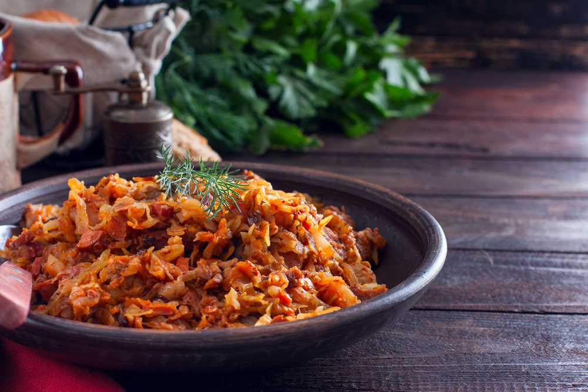

BIGOS

INGREDIENTS
- 1 lb sauerkraut
- 1 lb Polish sausage, sliced
- 1 lb beef, cubed
- 1 large onion, chopped
- 2 cloves garlic, minced
- 2 tbsp vegetable oil
- 1 tbsp tomato paste
- 1 tbsp flour
- 1 bay leaf
- 1 tsp caraway seeds
- 1 tsp dried marjoram
- 1 tsp paprika
- 1/2 cup red wine
- Salt and pepper to taste
INSTRUCTIONS
- Drain and rinse the sauerkraut in a colander.
- Heat the oil in a large pot over medium-high heat.
- Add the sausage and beef and cook until browned.
- Remove the meat from the pot and set aside.
- Add the onion and garlic to the pot and cook until soft.
- Add the tomato paste and flour and stir to combine.
- Return the meat to the pot and add the sauerkraut, bay leaf, caraway seeds, marjoram, paprika,
and red wine.
- Stir to combine and bring to a simmer.
- Cover the pot and simmer over low heat for 1-2 hours, stirring occasionally.
- Season with salt and pepper to taste.
- Serve hot with rye bread or mashed potatoes.